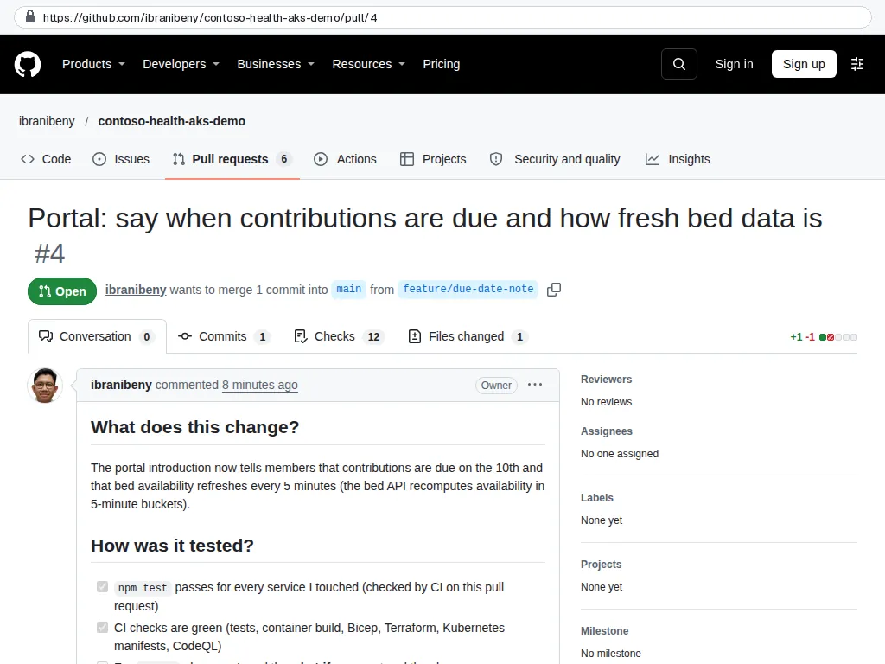
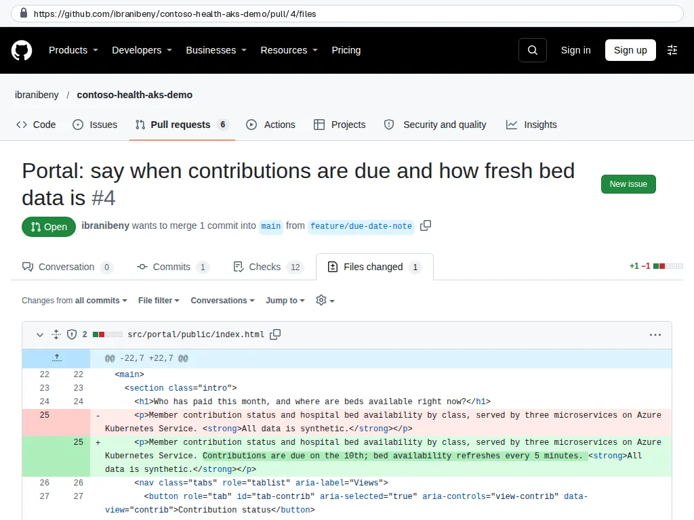
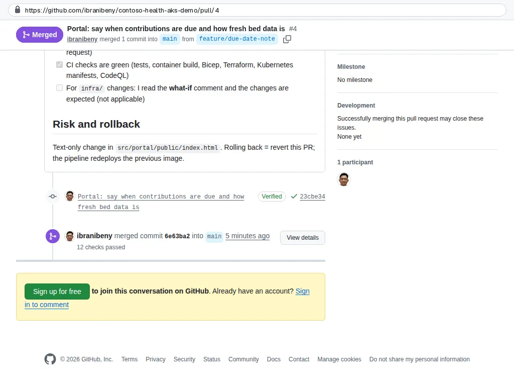
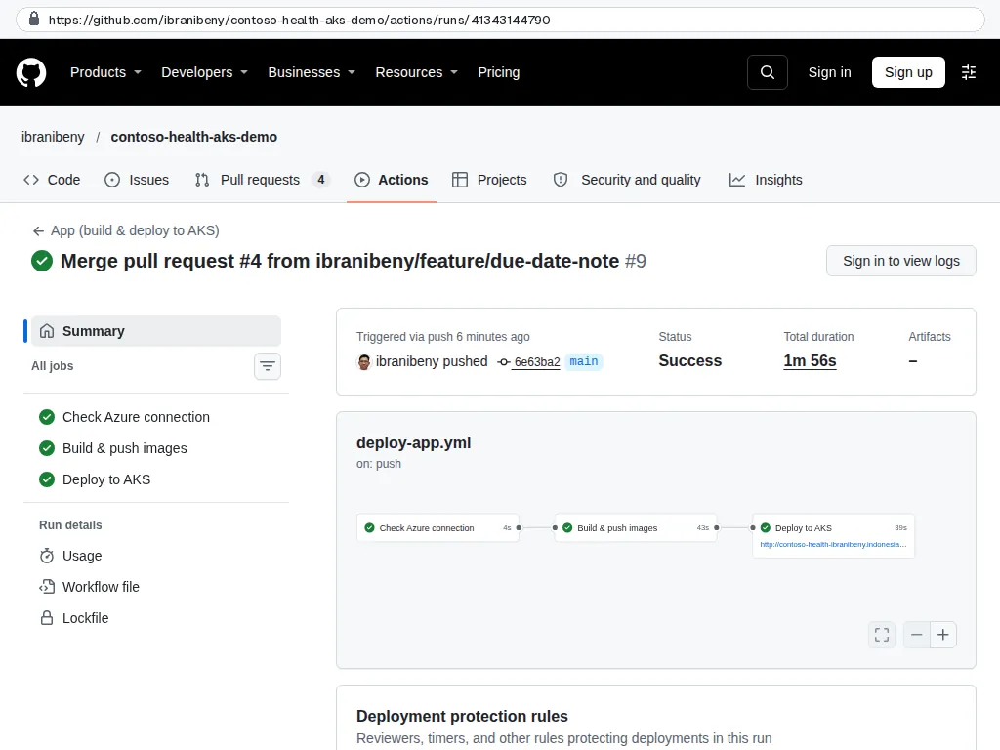
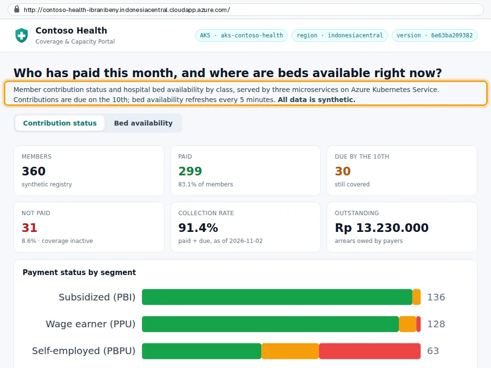
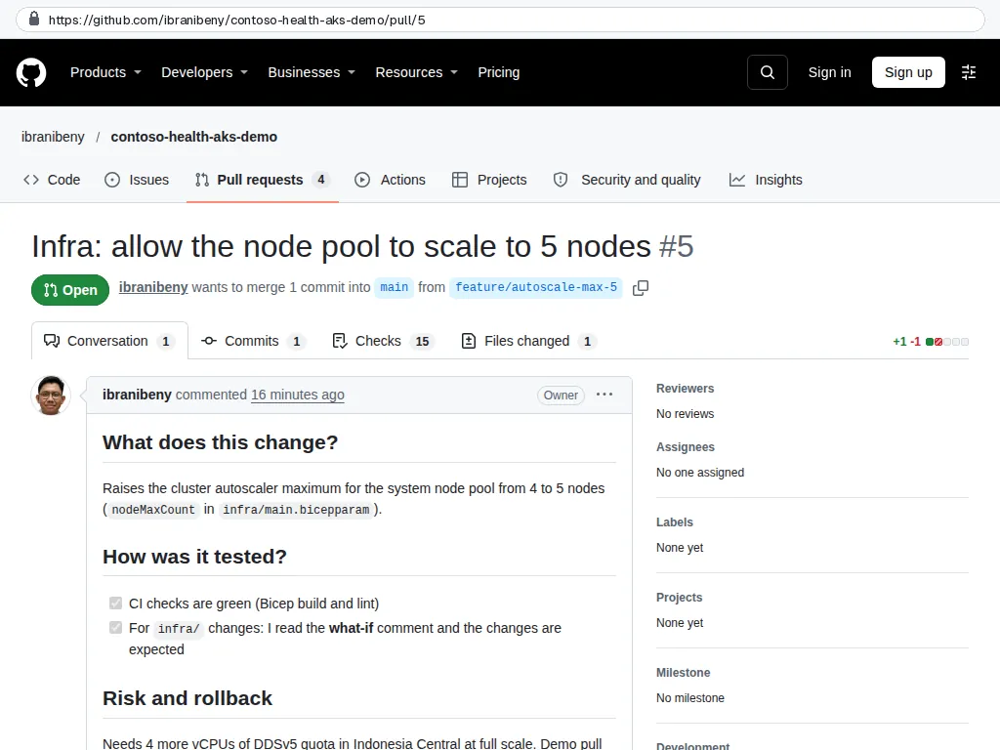
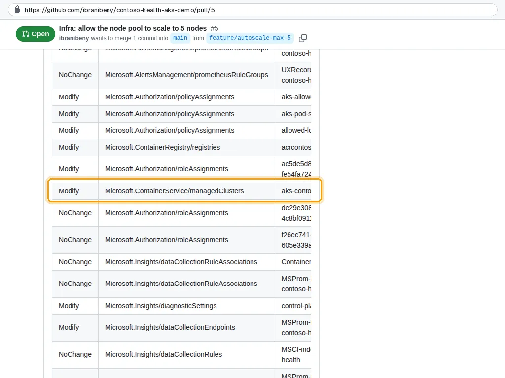

Step 7 of 10
Ship a change with code review
Make a change the way a team would: edit in a branch, open a pull request, let the checks and the reviewer do their work, merge, approve the rollout, and see the new version live. Then see how an infrastructure change previews itself with Bicep what-if.
Transcript (English)
Step seven. A change goes to production the way a team would ship it: branch, pull request, checks, review, merge, approval.
Pull request four changes one paragraph of the portal. The template asks what changed, how it was tested, and how to roll it back.
The files changed tab shows the exact diff the reviewer approves.
It merged only after the checks passed: twelve checks, including the eleven the ruleset requires.
The merge started the app workflow. After approval, the new version rolled out.
And it is live: the new sentence is there, and the version badge shows the merged commit.
Pull request five changes infrastructure: the autoscaler maximum goes from four to five. The what-if job runs with the pull-request credential.
Its comment lists what would change. The cluster shows Modify, as expected. Some other rows are what-if noise, so read the details before you merge.
Transcript (Bahasa Indonesia)
Langkah tujuh. Perubahan masuk ke production seperti cara sebuah tim merilisnya: branch, pull request, check, review, merge, persetujuan.
Pull request empat mengubah satu paragraf di portal. Templatnya menanyakan apa yang berubah, bagaimana pengujiannya, dan cara rollback-nya.
Tab Files changed menampilkan diff persis yang disetujui reviewer.
Pull request ini baru di-merge setelah check lolos: dua belas check, termasuk sebelas yang diwajibkan ruleset.
Merge tersebut memicu workflow aplikasi. Setelah disetujui, versi baru di-rollout.
Dan sudah live: kalimat barunya muncul, dan badge versi menampilkan commit yang di-merge.
Pull request lima mengubah infrastruktur: batas maksimum autoscaler naik dari empat ke lima. Job what-if berjalan dengan kredensial pull request.
Komentarnya memuat apa yang akan berubah. Cluster menunjukkan Modify, sesuai harapan. Beberapa baris lain adalah noise what-if, jadi baca detailnya sebelum di-merge.
What you will do#
- Edit a file in the browser on a new branch and open a pull request.
- Read the checks and the review, then merge.
- Approve the rollout and see the new version in the app.
- Open an infrastructure pull request and read the what-if comment.
This step ran fully automated: the GitHub API and the workflows in this repository did the work. The screenshots are public GitHub and app pages captured by the Guide evidence workflow, and the data frames show real output that the pipeline read back from Azure (read-only). The numbered instructions describe the same actions in the portal and GitHub UI.
Edit in a branch and open a pull request#
- Open a file such as
src/portal/public/index.htmland select the pencil icon (Edit this file). - Make a small visible change, then Commit changes, choose Create a new branch for this commit and start a pull request, and Propose changes.
- Fill in the pull request template and select Create pull request.
In the recorded run
Pull request #4 changes one paragraph of the portal. The template asks what changed, how it was tested and how to roll back.

GitHub Files changed: the exact diff the reviewer approves.

GitHub
Checks and review#
- CI runs the unit tests, builds the three images without pushing, validates the Bicep and the Kubernetes manifests. CodeQL scans the JavaScript and the workflows.
- The Merge pull request button stays disabled until every required check is green.
- Review the Files changed tab. If Copilot code review is enabled, its comments appear here too; resolve or reply to every conversation.
In the recorded run
Merged after all checks passed: 12 checks, including the 11 the ruleset requires.

GitHub
Merge and ship#
- Select Squash and merge. The merge to
mainchangessrc/**, which starts the App workflow. - Approve the
productiondeployment as in step 6. - Reload the app: the version badge in the header shows the new commit SHA.
In the recorded run
The merge started the App workflow. After approval, the new version rolled out.

GitHub Live: the new text, and the version badge shows commit 6e63ba2.

Live app
Preview an infrastructure change#
- Open
infra/main.bicepparam, changenodeMaxCountfrom 4 to 5 on a new branch and open a pull request. - The What-if (preview changes) job signs in with the pull-request credential and comments a table of the resources that would change, without changing anything.
- Close the pull request without merging, or merge it and approve the deployment if you want the change.
In the recorded run
Pull request #5 raises the autoscaler maximum. The what-if job signs in with the pull-request credential.

GitHub The what-if comment: the AKS cluster shows Modify. Other Modify rows are what-if noise on values Azure normalises; read the details.

GitHub
In the recorded run the what-if comment marked the AKS cluster as Modify (expected: maxCount 4 to 5) and also showed Modify for unchanged policy assignments, the registry, a role assignment and the diagnostic setting. What-if compares the template with what the resource providers return, and some properties come back normalised. Open the details before you merge, and treat the comment as a review aid, not a verdict.
Check your work#
- Pull request #4 shows all checks green and was merged; the App workflow ran from the merge commit.
- The app shows the new text and the version of the merge commit.
- The infrastructure pull request has a what-if comment listing the AKS cluster as Modify.
How it works#
Three gates, three purposes. Required checks prove the change builds and passes tests; the review catches what tests cannot; the environment approval decides when it reaches production. Each is configured once and enforced for everyone.
What-if is read-only. The pull-request credential can sign in and run az deployment group what-if, which needs read access; it never deploys because the deploy job only runs on main and only behind the environment approval.